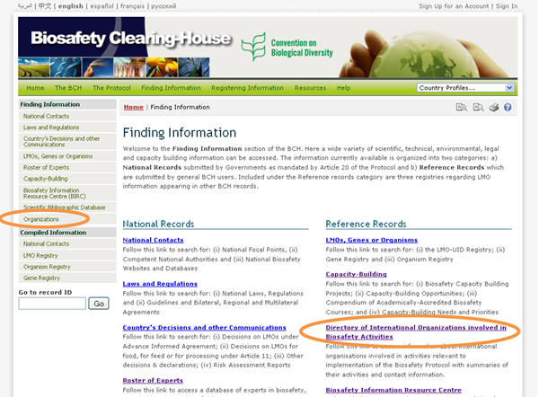
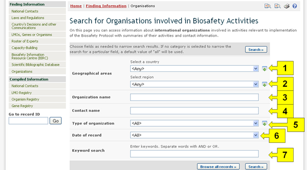
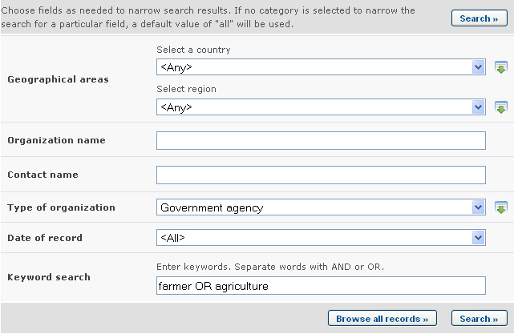
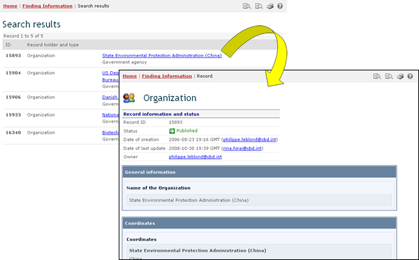
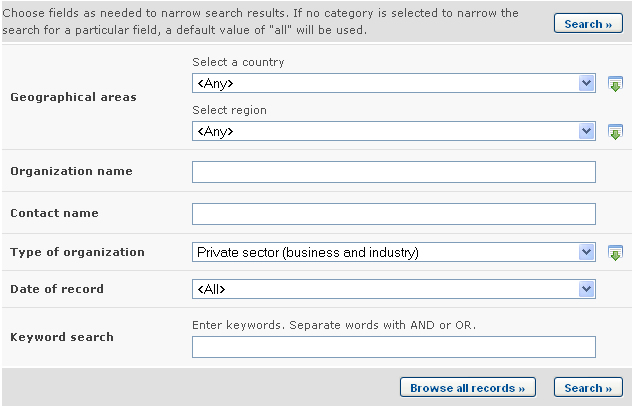
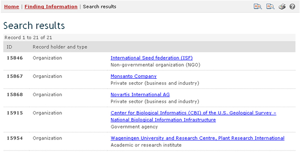

URL: http://bch.cbd.int/database/organizations/
La naturaleza mundial y multidisciplinaria del Protocolo provee una amplia base de usuarios para su implementación, extendiéndose más allá de las Partes del acuerdo. En consecuencia, el CIISB mantiene una base de datos de organizaciones involucradas en asuntos de bioseguridad.
La página de búsqueda de información acerca de Organizaciones puede ser accedida desde el menú desplegable Búsqueda de Información localizado en la barra de navegación, o vínculo del menú ubicado en la barra izquierda de la página Búsqueda de Información.

Esta página de búsqueda permite a los usuarios obtener información acerca de organizaciones involucradas en bioseguridad. Ésta información incluye un resumen de las actividades y la información de contacto de la organización.
En la página Búsqueda del Directorio de Organizaciones dedicadas a Actividades de Bioseguridad hay varios campos de criterios de búsqueda:
-
País: Campo de lista de selección para seleccionar un país.
-
Grupo de países: Campo de lista de selección para seleccionar un grupo de países o región.
-
Nombre de la organización: Campo de palabra clave para buscar por nombre de organización.
-
Nombre de contacto: Campo de palabra clave para buscar por contacto de organización.
-
Tipo de organización: Lista de selección para refinar resultados de la búsqueda a organizaciones de cierto tipo.
-
Fecha del Registro: Campo de fecha para acotar la búsqueda a un cierto intervalo de tiempo.
-
Búsqueda por Palabra clave: Campo de palabra clave para refinar resultados según palabras claves.
Vea “cómo usar las páginas de búsqueda” para aprender sobre los tipos de campo y cómo operarlos.

Ejemplo. Un usuario desea identificar organizaciones gubernamentales que trabajan con granjeros. El usuario: (i) selecciona Organismo Gubernamental en el cuadro Tipo de organización y (ii) granjero O agricultura en el cuadro de búsqueda Palabra clave.


Esta imagen fue tomada en Febrero del 2010 con el único propósito de proveer un ejemplo sobre el uso del CIISB.
Para cambiar la búsqueda a proyectos vinculados al sector privado, el usuario selecciona Sector privado (empresas e industria) en el cuadro tipo de organización.

